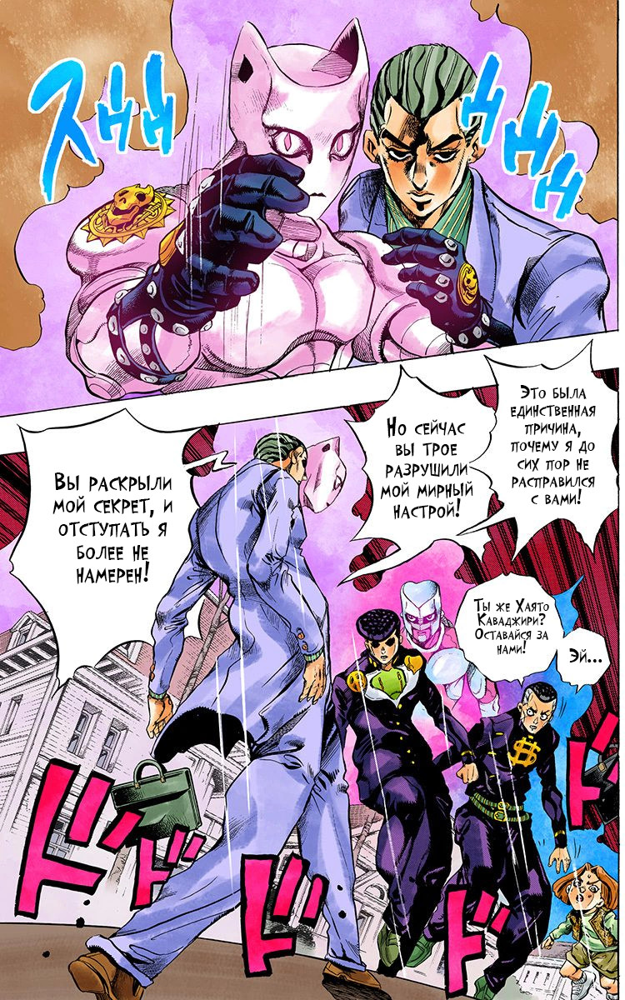

Мангака
Хирохико Араки

О Хирохико
Хирохико Араки(荒木 飛呂彦) родился 7 июня, 1960 в Сендае, Мияги. Он является мангакой и автором Невероятных приключений ДжоДжо, на котором и основывается ДжоДжо Вики. Он дебютировал под псевдонимом Тошиюки Араки (荒木 利之 Araki Toshiyuki?) в 1980 с ван-шотом Poker Under Arms, и начал свою полноценную карьеру с коротких серий Cool Shock B.T., Baoh: The Visitor, и Gorgeous Irene. Его работа над Невероятными приключениями ДжоДжо переросла в и продолжает сериализовываться в течение 30 лет, составляя уже 125 томом (На 19 июля 2019) и тираж более 100 миллионов экземпляров (Июль 2019).
Жанры
Приключения
Сверхъестественное
Оккультизм
Драма
Ужасы
Боевик
Боевые искусства
Аниме
Сёнэн
История
Фэнтэзи
Фантастика
Манга
Обзор страниц
Арка 4
Глава 162
20 страниц
Страница 7. Another One Bites the Dust
Bite The Dust - Если кто-нибудь, через Хаято узнает о новом облике Киры Йошикаге, то он тут же подвергается атаке и следует ВЗРЫВ!(Так же как Джоске не может исцелить себя при помощи собственного стэнда, подсадить Bite The Dust на себя самого Кира также не в силах).